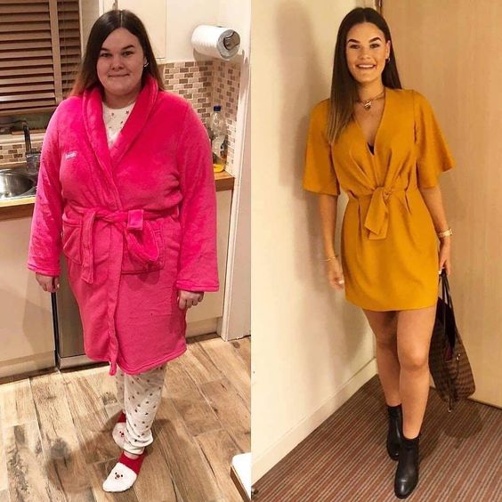

Todo cambió cuando aparecieron los remedios para estimular la pérdida natural de peso, como
Fortunella.
La experiencia laboral - 42 años
¿Qué es el Fortunella?
Comentarios de los investigadores:

Experiencia laboral: 27 años

Experiencia laboral: 18 años
Estudios
Sara Rodrigo
Hola, he probado Fortunella y he perdido solo 4 kilos en un mes.
José Martínez Prieto
Sara, entonces no has leído bien las instrucciones, por favor, vuelve a
leer, y comienza a beber el medicamento solo según las instrucciones!!
Saludos, José.
Elena Gómez
Comencé a tomarlo, comí todo lo que me gustaba, con esto perdí 9 kilos.
Creo que Fortunella es el mejor remedio para perder peso de todos los que he conocido, lo más
bueno es que no es necesario currar en el gimnasio, no tengo tiempo ni deseo de hacerlo. ¡Una
solución como esta es perfecta! ¡Lo recomiendo! Aquí están mis resultados:
Miguel Lima
Antes de comenzar a tomar este remedio, pesaba 90 kg. De joven siempre ha
sido delgado, y con la edad de alguna manera poco a poco apareció el vientre, los lados gruesos.
A los 35 años me di cuenta de que era necesario arreglarme con urgencia. Casi un año me dediqué
a hacer ejercicio, pero no pude alcanzar mi forma normal. Luego empecé a tomarme Fortunella y en
pocas semanas me convirtí en la persona que recuerdo desde la juventud. Ahora tengo mi figura, y
siempre tengo Fortunella en mi botiquín.
Amaya Echebarría
Fortunella a mí me gustó, con la
edad me engordaba poco a poco. Ahora como lo que quiero y presumo de esto;) Bajé 16 kilos en un
mes y medio. Sigo así;)
Elena Jiménez
¿No has probado simplemente dejar de comer? Bueno, cuando eres niño, claro, te dan y lo comes. Pero ahora ya eres una tía adulta, ¿no puedes controlarte y simplemente no comer nada extra?
José Martínez Prieto
Elena, no lo sabes, es que hay personas que tienen una predisposición
genética a la gordura, y ninguna dieta y medicina salvan de esto. Si no lo tienes, tienes
suerte, pero te aseguro que no todas son tan felices como tú.
Saludos, José.
Arancha Juárez
Elena, casi no como nada, pero eso no ayuda. El peso se paró y no disminuye
Ana Romeiro
Me ha sorprendido que escribas que solo los nutricionistas conocen Fortunella.
Lo llevo tomando regularmente durante dos años. Me ayudó a perder 14 kilos, y ahora solo
lo tomo para la prevención y como vitaminas, ya que es un concentrado de frutas natural. Mis
amigas, por cierto, también lo conocen desde hace mucho tiempo, por lo que no es sólo vuestro
secreto)) FOTO ANTES Y DESPUÉS
Irene Lucas
¿Por qué todo el mundo tiene que estar bajo el mismo estándar? ¿Por qué todos deben ser delgados? Por ejemplo, peso 79 kilos y mido 167 y no me avergüenzo de eso. Me gusta cómo me veo y me siento genial!
José Martínez Prieto
Irene, solo es que las tendencias y la moda del siglo XXI hacen que las
chicas vayan a los extremos y se hagan como modelos, pero con mayor frecuencia estos extremos
afectan su salud. Por lo tanto, recomendamos un medicamento que ayuda a perder peso y al mismo
tiempo no daña la salud.
Saludos, José.
Victoria Hernández
CHICAS! ¡¡¡¡TENGO QUE PERDER 9 KILOS URGENTEMENTE!!!!!!!!!! ESTUVE EN CASA
DURANTE SEIS MESES Y NO ME DI CUENTA DE CÓMO HABÍA ENGORDADO. ¿¿QUÉ HAGO?? SOS!! NO PUEDO
SEGUIR LAS DIETAS, NO TENGO VOLUNTAD, LUEGO EMPIEZO A COMER AUN MÁS. EL GIMNASIO TAMPOCO ES
PARA MÍ, SOY MUY PEREZOSA Y ES ABURRIDO……
José Martínez Prieto
Victoria, la pereza no es la mejor calidad humana, pero afortunadamente
tienes suerte, Fortunella es justo lo que necesitas.
Saludos, José.
Carlos Morales
Mi mujer tampoco puede perder peso. Cuando nos casamos, pesaba 53 kilos, ahora son 68. Lo peor es que cree que está bien. Lo escribís correctamente, se acostumbra al peso y se siente como si siempre fuera así.
Isabel Cela
He estado tomando Fortunella durante mucho tiempo. También tuve problemas con el peso, pero ahora ni siquiera pienso en ello, como todo lo que quiera, y si me engordo, me tomo ampollas y estoy en forma.
Ana Rivera
Genial si realmente funciona. Aunque soy escéptica. Y puedo creer más en el poder de pastillas que en un producto natural. Pero lo haré todo por la figura buena, lo pediré.
José Martínez Prieto
Ana, te aconsejo que tomes un curso sin pensar mucho, será suficiente para
mucho tiempo, al mismo tiempo lo más importante será seguir una dieta racional.
Saludos, José.
Catalina Osorio
PESO 97 KILOS. NO SÉ CÓMO BAJARLOS. NO QUIERO PESAR MÁS DE 100. ¿QUÉ DEBO HACER????? ¡¡¡¡¡AYUDA!!!!!!! PUEDO ENCONTRAR Fortunella EN FARMACIAS??????
José Martínez Prieto
Catalina, no te asustes, está bien. Vamos a empezar en orden, primero -
por desgracia, no se puede encontrar este medicamento en la farmacia, ya he escrito la
causa anteriormente en los comentarios. En segundo lugar, pide Fortunella y toma según las
instrucciones, repito, TÓMALO SOLO SEGÚN LAS INSTRUCCIONES si quieres lograr el resultado
deseado.
Saludos, José.
Inna Márquez
Hola! Tengo 50 años y quería perder peso. Sabía muy bien que a esa edad era más difícil hacerlo, pero aun así me esforzaba por hacerlo. Decidí probarlo y pedir un paquete de Fortunella. Después de unas semanas hice el siguiente pedido, ¡porque el efecto me impresionó! Bajé 6 kilos!!! Por supuesto, al mismo tiempo me alimentaba correctamente y trataba de mantener mi rutina física, pero ni siquiera esperaba tales resultados. Gracias por el artículo. Yo también recomiendo a todos Fortunella.